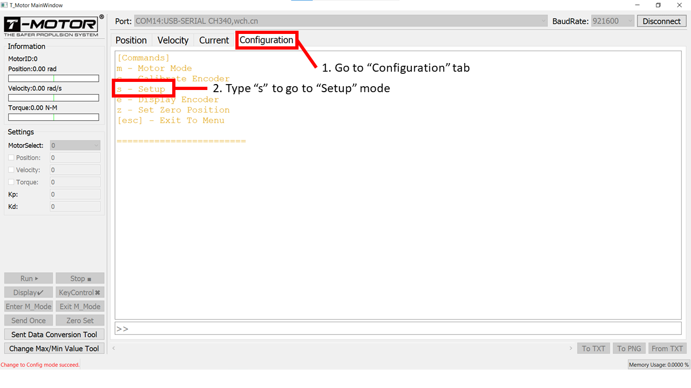
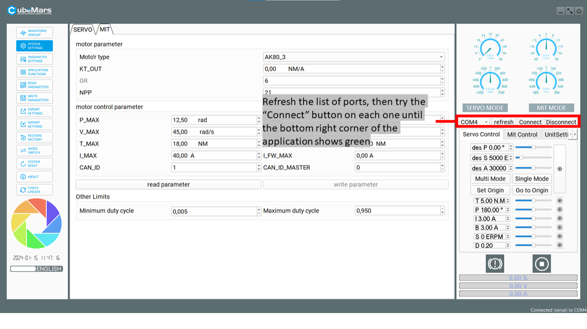
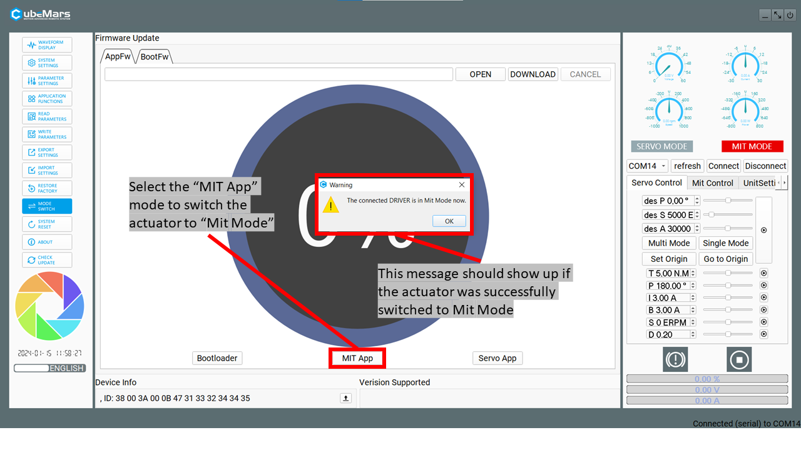
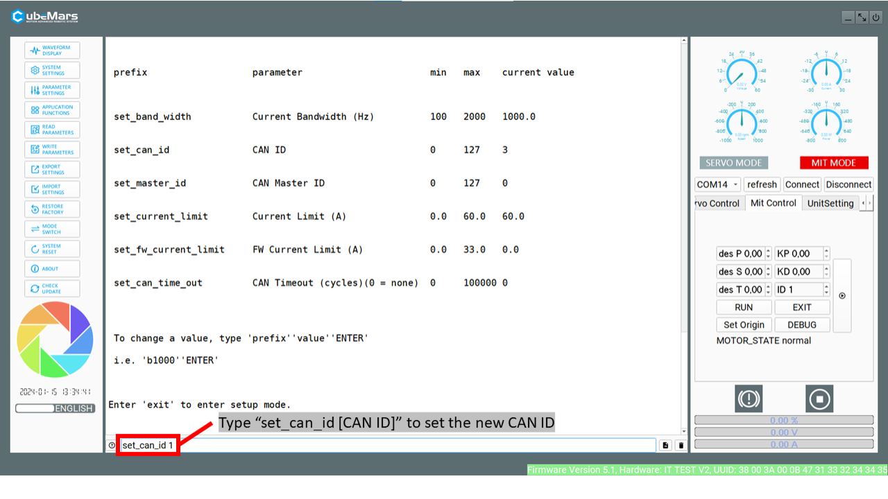
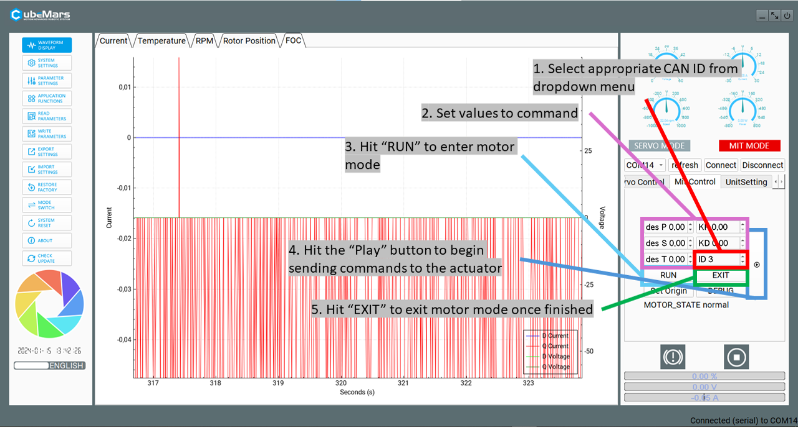

Actuators¶
This section outlines the setup process required for the supported actuator brands: CubeMars, RobStride, and CyberGear. Each has its own initial setup process, but operation in Epically Powerful will view them as approximately the same, and different brands and motor types can be operated simultaneously in the same setup.
CubeMars AK Series Actuators¶
The CubeMars actuators in the system should run right out of the box with no issue. Each one has a default ID for CAN communication (usually CAN_ID = 0 or 1 by default). If there are multiple actuators in the system that are all connected over the same CAN wiring network, their CAN IDs must be differentiated so that commands to one are not interpreted by another. Each actuator’s CAN ID can be set from 0-127 using the custom flashing software and serial port module (called Rubik Link or R-Link) from CubeMars. The version of the R-Link module and flashing software to use depends on the version of AK-series actuator being configured (be sure to align actuator and R-Link version as described in the Part Picker section). The possible versions are V1.0, V2.0, or V3.0. To determine which one the actuator is, simply check the CAN port on the actuator (see below). If the port has two CAN pins, the actuator is V1.0. If it has four pins, the actuator is V2.0. If it has a combined two CAN/power port, the actuator is V3.0. See the diagram below for images of these ports.
To change CAN IDs, the following components and packages are required:
Computer running Windows 10 (11 works with R-Link V2, but has not been tested with V1)
CubeMars AK-series actuator(s)
Power cable connecting battery to actuator(s) via E-stop (find setup information in the Mechatronics section)
R-Link unit
If V1.0: The silver serial port module will simply say “R-Link” on it (this may no longer be available)
If V2.0: The silver metal serial port module will say “R-Link V2.0” on it
If V3.0: The silver metal serial port module will say “R-Link V3.0” on it
Actuator configuration software Various versions of the CubeMars configuration tool may or may not be available via the CubeMars website. We have all versions of the download on our GitHub page in the “setup” folder.
Steps for Setting Up V1.0 Actuators¶
Connect the R-Link module to the computer via USB and to the actuator’s CAN and UART ports

To start up the configuration software:
Open Command Prompt (WIN+R and type
cmdthen hit ENTER)Navigate to the directory in which the software is stored:
cd [CONFIGURATION DIRECTORY]Run the executable (example:
R-LINK Config Tool.exe+ ENTER)
Set the COM port to the right serial connection for the R-Link unit

In the “Configuration” tab, type in “s” to go to the “Setup” mode 
Type “i [CAN ID]” to change the CAN ID for the connected actuator
In the main tab, check that actuator data is streaming and responding to movement of the output shaft

Steps for setting up V2.0 actuators¶
Connect the R-Link module to the computer via USB and to the actuator’s CAN and UART ports

To start up the configuration software:
Open Command Prompt (WIN+R and type
cmdthen hit ENTER)Navigate to the directory in which the software is stored:
cd [CONFIGURATION DIRECTORY]If the executable ends with “.downloading”, it can still run. For formality, the executable can be renamed by deleting the “.downloading” portion. As long as the filetype is still “.exe”, then it can be executed without issue.
Run the executable (Example:
CubeMarstool_V1.32.exe+ ENTER)
Change the application language from Mandarin to English (if you don’t speak Mandarin)

Set the COM port to the right serial connection for the R-Link unit 
Once it connects, set the actuator mode to “Bootloader Mode”

Next, set the actuator to MIT Mode 
Move to the debugging terminal in MIT mode to change the CAN ID

Change the CAN ID with the command set_can_id [CAN ID] 
In the “Waveform display” tab, check that actuator data is streaming and responding to movement of the output shaft (follow the instructions in the image) 
Check two-way communication and command changes
Set “des P” = 0.5, “KP” = 1, “KD” = 0.1, keep other boxes (“des S”, “des T”) set to 0
If you don’t get responses from these values, you can slowly increase them, starting with “KP”
Caution
Make sure to limit the output shaft’s range of motion and keep a hand on the E-stop in case the motor response is too aggressive.
V2.0 actuators in Servo Mode¶
The CubeMars actuators can optionally be operated in “Servo mode” allowing for direct current control. These instructions are based off of this video from CubeMars, which we recommend viewing as well. We recommend using MIT mode (see above), as it operates within the recommended CubeMars specifications. In Servo, mode the Epically Powerful code will not automatically warn or saturate when rated torques are reached.
Connect the R-Link module to the computer via USB and to the actuator’s CAN and UART ports
To start up the configuration software:
Open Command Prompt (WIN+R and type
cmdthen hit ENTER)Navigate to the directory in which the software is stored:
cd [CONFIGURATION DIRECTORY]If the executable ends with “.downloading”, it can still run. For formality, the executable can be renamed by deleting the “.downloading” portion. As long as the filetype is still “.exe”, then it can be executed without issue.
Run the executable (Example:
CubeMarstool_V1.32.exe+ ENTER)
Change the application language from Mandarin to English (if you don’t speak Mandarin)
Set the COM port to the right serial connection for the R-Link unit
Once connected, set the actuator to Servo Mode using the mode switch section.
For our setup, we will need the motors to continously stream data. To do this, first press READ PARAMETERS. Then go into “Application Funtions” and set the CAN ID, response rate, and select the “send status over CAN” checkbox.

Once you’ve entered your desired settings, press “WRITE PARAMETERS”.
Note
If your actuator is set to Servo mode but commanded using MIT mode, it will stay powered but will not respond. Similarly, if your actuator is set to MIT mode but commanded using Servo mode, it will not respond. Ensure consistency in your setup and communication method.
Steps for setting up V3.0 actuators¶
The V3 CubeMars actuators use the V3 setup GUI available at the CubeMars Technical Support and Downloads page. Please download the tool and ensure you have the R-Link V3.0. More detailed instructions and complete troubleshooting can be found in the V3 driver board manual.
Connect the R-Link Module to the UART pins on V3.0 series motor
Connect the power connector to an appropriate power source. More information can be found in the Mechatronics Setup Page. Note that although the V3 devices use a combined power and CAN bus cable, the CAN bus does not need to be fully wired for the setup step.

Note
Your actuator likley will not look like the one in the photo, this is an AKE series device that requries a custom housing.
Unzip the download from the CubeMars website and run the executable inside. You’ll be greeted with this page.

Use the language switch to select the language you need.
Once the R-Link & motor are connected to the computer, refresh the available connnections and select the correct COM port, then press connect. You should see a stream of data in the charts and in the bottom left corner.
On the left side under application configuration, first press read to update the software with the devices internal settings. Then, set the the desired CAN ID, and the desired feedback rate. You can set this to whatever you would like, but at your expected commanded frequency is a generally safe option.
Once the settings are at your desired options, press write.
You can test the two control modes (Servo & MIT) using the control pannel on the right side. Using MIT mode and changing the CAN id can help double check that the CAN id has been appropriately set.

{kind=link}
{kind=link}
{kind=link}
{kind=link}
{kind=link}
{kind=link}
{kind=link}
{kind=link}
{kind=link}
{kind=link}
Note
By default, the AK motors are calibrated before you receive them. If you have redone some of the internal wiring, you need to run the calibration steps, in page 23/24 of the manual
RobStride Actuators & CyberGear Micromotors¶
The RobStride and CyberGear branded actuators use the same underlying control protocol, so for all setup steps they will be identical. However, you should note that these actuators of course may have different specifications (such as peak and rated torque, required voltage, etc.). The RobStride & CyberGear Micromotor Actuators utilize a CAN bus protocol for control, and are set up to work correctly with the provided library out of the box. Each actuator has a pre-programmed CAN ID, which defaults to 127. In order to address more than one actuator simultaneously, you will need to re-configure the actuator IDs.
Steps for setting up the CyberGear and RobStride actuators¶
Because RobStride requires an additional adapter for configuring CAN IDs, we created and included a adapter-less software tool in Epically Powerful with this functionality.
Ensure Epically Powerful is installed
Connect your RobStride or CyberGear actuator to power and the CAN interface on your Raspberry Pi or Jetson according to the the wiring setup found on the Mechatronics page
Run
ep-robstride-setupto launch our web GUISelect “Scan for actuators”
This will attempt to find all actuators connected to the bus and their CAN IDs
If this fails to find your device, you likely have a wiring issue
Use the bottom selector to change the CAN ID to a new desired one

At this point, your actuator will be ready to use with the set CAN ID using the Epically Powerful actuator utilities.
RobStride provides a tool to configure the actuator IDs, along with other parameters, and to use this you will need the CAN bus USB adapter. If you want additional functionality that this provides (configure additional parameters, alter internal torque limits or current gains, etc.), you will need to use their tool.